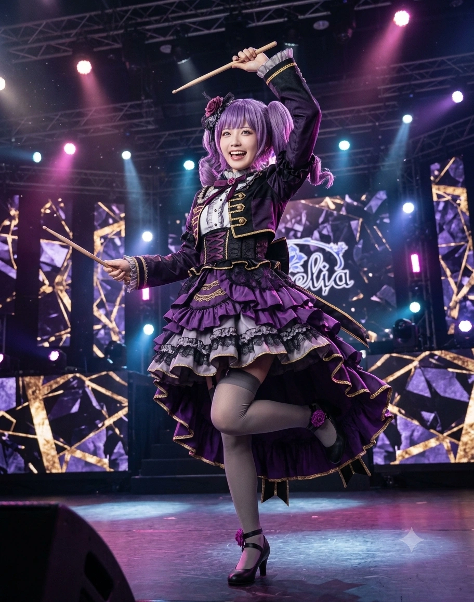

1. 개요
"응! 어둠의 힘이 콰앙(パーンッ)! 하는 느낌이 들어! 잘 보아라, 칠흑의 가호를 받은 이 태아연 님의 더블 베이스 드럼을! 그러니까... 마력이 가득해서... 어... 린린! 그 '파멸' 다음에 이어지는 어려운 한자 단어가 뭐였지?!"
"우리 미연 언니(토모에)는 우주에서 제일 멋있는 드러머고, 희나 씨(유키나)는 세상에서 두 번째로 완전완전완전 멋있는 사람이야! 아연이도 언니들처럼 엄청 멋있는 어른이 될 거야~!"
효빈광역시 청엽구의 거대 주거·교통 요충지인 우전동(宇田洞)과 북구의 중2병 성지 아자동(牙子洞)을 지배하는 심연의 마스코트이자, 프로 심포닉 고딕 록 밴드 『로젤리아(Roselia 효빈)』의 최연소 막내 드러머. 『애프터글로우』의 큰언니 드러머 태미연(우다가와 토모에 본체, 1992년생)의 11살 어린 늦둥이 친여동생이며, 키보디스트 김인자(시로카네 린코 본체)의 영혼의 단짝(통칭 린아코 / 코코커플)이다.
출생지인 청엽구 우전동(宇田洞)과 동네를 가로지르는 하천인 우전천(宇田川)의 한자 '우전천(宇田川)'을 일본어로 읽으면 놀랍게도 《BanG Dream!》의 자매 드러머 우다가와 아코·토모에(宇田川 あこ·巴)의 성씨와 100% 일치한다! 또한 이름인 아연(亞姸)의 앞 글자 '아(亞)'는 우다가와 아코의 한자 표기인 '아자(亞子)'에서 따온 것으로, 효빈시 북구 채산동 산하의 법정동인 아자동(牙子洞)과 발음이 완벽하게 겹쳐 두 동네 모두 그녀의 성지로 추앙받는다. 생년월일 역시 애니메이션 설정상 아코와 똑같은 2003년 7월 3일생(게자리)이다.
꽈배기 컬이 들어간 화려한 보라색 트윈테일(풀면 극강의 청순 미녀가 되는 '미모 봉인구'!)에 루비처럼 붉은 눈동자, 웃을 때 살짝 보이는 귀여운 덧니(송곳니), 그리고 148~150cm의 조그만 체구로 거대한 DW Collector's 더블 베이스(투베이스) 드럼을 폭풍처럼 연주하는 반전 실력까지 우다가와 아코가 현실에 그대로 튀어나온 도플갱어다. 어려운 한자어나 사자성어를 몰라 중2병 대사를 치다 말문이 막히면 "린린 도와줘~!"를 외치는 바보 막내이지만, 끈기와 노력, 그리고 밴드를 사랑하는 순수한 마음만큼은 누구보다 빛나는 로젤리아의 활력소다.
2. 생애 및 학창 시절 (우전동의 심연에서 태어난 천재 막내 드러머)
2.1. 청엽구 우전(宇田)동 토모아파트의 늦둥이 막내딸과 11살 위 큰언니 『태미연』
2003년 7월 3일, 효빈광역시 청엽구 우전3동 토모아파트(이후 우전2동 우전천 변의 대형 아파트로 이사함)에서 음향기기 유통업을 하는 아버지 태우전 씨와 의상 수선실을 운영하는 어머니 조은숙 여사의 2녀 중 늦둥이 차녀(막내딸)로 태어났다.
[원작과의 결정적 로컬 차이점: 11살 터울의 늦둥이 동생이라 더욱 완벽한 '언니 바라기' 서사!]
원작 게임과 애니메이션에서 우다가와 토모에와 아코는 1살 터울(연년생) 자매로 설정되어 있으나, 머리색과 눈동자 색이 완전히 다르고 키 차이가 무려 20cm(168cm vs 148cm)나 나는 데다 아코가 언니를 거의 신(神)처럼 우러러보며 어리광을 부리는 묘사가 많다. 효빈시 세계관에서는 언니 태미연(1992년생, 천모카·문주란과 동갑)과 동생 태아연(2003년생, 마서령·심나나와 동갑)이 무려 '11살 터울이 나는 늦둥이 자매'로 설정되어 이 모든 요소의 개연성이 200% 완벽하게 맞아떨어진다!
부모님이 맞벌이로 바쁘셨던 유년 시절, 당시 이미 중·고등학생이었던 11살 위의 큰언니 태미연이 아기였던 아연이를 업어 키우고 이유식을 먹이며 엄마처럼 돌봐주었다. 아연이가 걸음마를 뗀 뒤부터 본 것은 우전천 여름 축제에서 전통 큰북(와다이코)을 치고 『애프터글로우』의 드러머로 활약하는 언니 미연이의 압도적으로 멋있는 등짝이었다. 아연이는 자연스럽게 "우리 언니는 우주에서 제일 멋있는 전지전능한 신(神)이야! 나도 언니처럼 멋있는 드러머가 될래!"라며 초등학생 때부터 언니의 드럼 스틱을 쥐고 박자를 두드리기 시작했다.
2.2. NFO의 대마도사 '린린(김인자)'과의 조우와 창전구 월경(越境) 통학
청엽구 우전2동의 토포초등학교를 졸업할 무렵, 아연이는 거실에 설치된 트리플 모니터 게이밍 PC로 온라인 MMORPG 게임 『NFO(네오 판타지 온라인)』에 푹 빠져 지냈다.當時 네크로맨서(사령술사) 캐릭터를 키우던 아연이는 게임 속 멋진 중2병 대사를 그대로 따라 하며 무작정 보스 몹에게 돌격하다가 파티원들에게 '무매너 트롤 유저'로 찍혀 아무도 파티를 안 해주는 외톨이 신세였다.
그때 사냥터에 홀로 남겨져 울먹이던 아연이를 구해준 고레벨 흑마술사가 바로 2살 언니인 김인자(시로카네 린코 본체, 2001년생 / 닉네임: RinRin)였다! 현실에서는 대인기피증으로 말도 못 하던 인자 언니에게 활달한 아연이가 먼저 다가가 "린린~!! 오늘부터 아연이랑 2인 고정 파티 맺자!!"라며 손을 내밀면서, 두 사람의 외로웠던 게임 인생은 둘도 없는 단짝의 시대로 바뀌었다.
중학교 진학을 앞두고 아연이는 "린린 언니랑 이리사 언니가 다니는 학교에 나도 따라갈래!"라며, 청엽구 우전동에서 전철로 바로 옆 동네(경계선 인접 구)인 창전구 학군의 창전중학교와 월삼여자고등학교로 진학해 언니들의 직속 후배(댄스부 후배)가 되었다.
2.3. 끈질긴 대시 끝에 일궈낸 『로젤리아』 입부와 리듬게임 아이콘 악보의 기적!
아연이가 창전중학교 3학년(언니들은 월삼여고 2학년)이던 해, 라이브 하우스에서 우연히 보컬 우희나(미나토 유키나 본체)의 압도적인 솔로 가창을 들은 아연이는 온몸에 전율을 느끼며 그 자리에서 열성 팬이 되었다("우리 미연 언니 다음으로 세상에서 두 번째로 멋있는 사람 발견!!").
희나가 밴드 드러머를 구한다는 소식을 들은 아연이는 매일같이 희나를 찾아가 "아연이를 밴드에 넣어주세요!"라며 매달렸다. 처음엔 희나에게 "어린애 장난이 아니야"라며 수차례 문전박대를 당했으나, 포기할 줄 모르는 근성파 아연이는 친언니 태미연의 조언을 받아 희나의 노래에 자신이 생각한 더블 베이스 드럼 비트를 악보가 너덜너덜해질 때까지 연구해 적어 갔고, 댄스부 선배 이리사의 베이스 세션 지원 사격에 힘입어 마침내 로젤리아의 세 번째 멤버로 당당히 합격했다! 이어 NFO 단짝인 김인자(린린)까지 키보디스트로 설득해 데려오며 로젤리아 5인 완전체 결성의 일등공신이 되었다.
[정식 오선지 악보는 못 보지만, '리듬게임 노트 아이콘'으로 변환하면 초절정 연주 가능!]
가장 놀라운 기행은 아연이의 악보 해독법이다. 아연이는 천부적인 리듬감과 양발 더블 페달 속주 실력을 지녔음에도, 머리가 나빠(?) 정식 콩나물 오선지 드럼 악보는 눈이 어지러워 잘 읽지 못한다! 이를 알게 된 천재 키보디스트 김인자(린린)가 로젤리아의 초고난도 드럼 악보를 아연이가 매일 오락실에서 하는 '리듬게임(태고의 달인·드럼매니아·걸파)의 동그라미 노트 아이콘'으로 일일이 변환해서 그려주었는데, 그 아이콘 악보를 본 아연이가 단 한 번에 원곡을 100% 퍼펙트하게 연주해 내는 기적을 선보여 허사영의 입을 떡 벌어지게 만들었다!(원작 공식 설정 완벽 고증)
2.4. 언니들을 따라 진학한 『엽월대학교 실용음악과』와 우전역 드럼 연습실의 지배자
고등학교 진학 후 동갑내기 친구들인 강숙미의 여동생 강아성(토야마 아스카 포지션), 록(아사히 롯카 포지션)과 '고1 단짝 트리오'로 몰려다니며 즐거운 학창 시절을 보낸 아연이는, 고3 입시 때 한자와 영어 공부는 처참했으나 이리사와 김인자의 눈물겨운 과외로 과락을 면하고 드럼 실기 시험에서 심사위원 만장일치 전체 1등(더블 베이스 드럼 솔로로 고막을 찢어놓음!)을 기록하며 언니들(우희나, 이리사, 김인자)이 재학 중인 엽월대학교 예술학부 실용음악과(22학번)에 합격했다.
3. 비주얼 및 캐릭터성 (148cm 소악마 마스코트 & 어휘력 딸리는 더블 베이스 괴물)
3.1. 미모 봉인구 '보라색 꽈배기 트윈테일'과 언니와 정반대인 148cm(20cm 차이) 쪼꼬미
화려한 꽈배기 롤 컬이 들어간 보라색 양갈래 트윈테일에 크고 동그란 루비색(적안) 눈동자, 작은 얼굴과 귀여운 송곳니를 지닌 최강의 소악마 마스코트 미소녀다. 사복으로는 검은 레이스와 해골·십자가 장식이 달린 펑키한 고스펑크(Goth-Punk) 의상을 즐겨 입는다.
참고로 강숙미의 별머리와 이아리의 금발 트윈테일에 이어, 태아연의 '보라색 꽈배기 트윈테일' 역시 세계관 3대 미모 봉인구로 꼽힌다! 집에서 목욕을 마치고 트윈테일을 완전히 풀어 내린 생머리 상태의 아연이는, 평소의 철없는 꼬마 느낌이 사라지고 11살 위 친언니 태미연(토모에)을 빼닮은 극강의 청순·성숙 미녀로 돌변해 팬들의 심장을 폭행한다.
신장은 중학교 시절 148cm에서 고등학교 진학 후 2cm가량 자라 150cm가 되었으나, 168cm의 장신 모델 체형인 친언니 태미연과 나란히 서면 여전히 머리 하나(약 18~20cm) 차이가 난다. 자매인데도 머리색(홍발 vs 자발), 눈동자 색(청록안 vs 적안), 체형이 송곳니 빼고는 전부 달라서 처음 보는 사람들은 친자매인지 몰라보며, 오히려 보라색 장발에 적안인 연극부 선배(세타 카오루 포지션)와 외모가 똑같아 팬들 사이에서 '카오루 숨겨진 동생설' 농담이 돌기도 한다.
3.2. "어둠의 힘이... 그러니까 좋은 느낌으로 콰앙!" 한자 문맹 바보와 투베이스 신공
스스로를 '칠흑의 심연을 지배하는 암흑 대마왕(중2병 모드 1인칭: 와레 / 我)'이라 칭하며 멋있는 대사와 마무리 포즈를 매일 연구하지만, 결정적인 문제는 국어 어휘력과 한자 실력이 처참한 수준이라 문장을 끝까지 이어가지 못한다는 점이다!
예를 들어 "크하하! 이 의상에서 흘러나오는 사신의 마력이... 어... 삼라만상의 그... 뭐라고 할까... 그냥 엄청 좋은 느낌으로 콰앙(パーンッ)! 하고 터질 것 같아!!"라며 끝을 흐리는 식이다. SNS나 문자 메시지를 보낼 때도 어려운 한자어는 전부 소리 나는 대로 히라가나(혹은 한글 발음)로 풀어서 적으며, 막힐 때마다 옆에 있는 걸어 다니는 사전 김인자(린린)의 옷소매를 잡아당기며 통역을 요청한다. (좋아하는 음식도 어린아이 입맛 그대로 포테이토칩과 알록달록한 젤리빈이며, 징그러운 해삼과 쓴 피망은 극혐한다.)
그러나 드럼 세트 뒤에 앉는 순간 모든 바보미가 사라지고, 뱅드림 세계관에서 유텐지 냐무와 함께 단 둘뿐인 '정통 더블 베이스(투베이스 페달) 드러머'로서 기관총 같은 16비트 트윈 페달 연타와 현란한 심벌 초크를 구사하는 월드클래스 드러머로 돌변한다.
4. 정치 성향: 우전동 상권 부활 지지자와 반(反)국힘 네크로맨서 (친민주 성향)
"우전동 아파트에서 드럼 친다고 구청에 민원 넣는 대신... 박효빈 시장님이랑 신수인 의원님이 우전역 지하에 완전완전 멋있는 무료 방음 드럼 연습실을 만들어 주셨어!! 게다가 이마트 우전점 없어져서 시무룩했는데 이케아랑 스타필드까지 지어주시다니, 민주당은 빛의 대마법사 당이야~! 국민의힘 나쁜 아저씨들은 아연이가 네크로맨서 해골 병사로 캬바앙 해버릴 거야!!"
태아연은 친언니 태미연이나 다른 언니들처럼 공식적으로 당적을 두지는 않은 무소속 신분이지만, 친(親) 더불어민주당 성향을 아주 강력하게 띠고 있다. 그녀가 사는 청엽구 우전동(宇田洞)(국회의원: 더불어민주당 재선 신수인 의원)은 파란만장한 상권 부활의 역사를 겪은 곳이다.
과거 2022년, 일부 구태 상인회의 텃세와 규제로 인해 우전동의 핵심 앵커 시설이었던 '이마트 우전점'이 폐점하면서 우전동 골목 상권 전체가 유동 인구가 끊긴 황량한 슬럼가로 전락할 위기에 처했었다. 당시 포테이토칩과 젤리빈을 사러 가던 마트가 사라져 아연이가 대성통곡했을 때, 구원투수로 등판한 박효빈 시장과 신수인 의원이 '메가 쇼핑 클러스터' 정책을 가동해 그 빈 부지에 2024년 『이케아(IKEA) 효빈점』을 성대하게 개점시키고 2028년 완공 목표로 초대형 『스타필드 효빈』을 착공시키며 우전동 경제를 화려하게 부활시켜 냈다!
게다가 주말마다 우전동 아파트 단지에서 "옆집 드럼 소리보다 더 크게 쳐서 복수하세요!"라는 드럼 학원 전단지가 날아다니고 '층간드럼 민원'이 폭주하자, 박효빈 시장이 효빈교통공사에 지시해 1·2호선 환승역인 우전역 지하 유휴 공간에 최고급 방음 시공이 완료된 『우전역 무료 간이 드럼 연습실』을 설치해 주었기에 아연이에게 박효빈 시장과 민주당은 영원한 은인이다. (참고로 우전역 드럼 연습실 입구에 적힌 "사용료는 무료이나 드럼 스틱은 개인 지참. 시설 파손 시 3대가 멸할 정도로 배상 청구함"이라는 살벌한 경고문은 언니 태미연이 불러주고 동생 태아연이 직접 매직으로 쓴 글씨다!)
4.1. 소속 정당
| 기간 | 정당명 | 비고 |
| 2022~현재 | 무소속 | 친(親) 더불어민주당 성향
청엽구 우전동·북구 아자동 청년락페스티벌 홍보위원 |
5. 효빈시판 Roselia 멤버 및 가족 관계와 4대 일화
조류희(루이)와 허사영(사요) 두 사람을 제외한 세계관 모든 인물들에게 이름으로 불리며, 본인 또한 선배들에게도 '-쨩', '-찡'을 붙여 친근하게 부르는 사랑스러운 막내다.
5.1. 멤버별 & 자매 상세 설정 (김인자·태미연·우희나·이리사·허사영)
- 김인자 (白金燐子 / 시로카네 린코 포지션, 2001년생) - 내 모든 중2병 대사를 통역해 주고 악보를 그려주는 평생의 영혼 단짝 '린린':
아연이가 세상에서 가장 의지하는 2살 위의 단짝 언니(통칭 린아코 / 코코커플). 인자가 유일하게 말을 놓고 '아연(아코) 쨩'이라 부르는 대상이며, 아연이는 인자를 "린린(りんりん)~!"이라 부른다. 아연이가 2장 때 우희나의 질책에 상처받아 뛰쳐나갔을 때 인자가 함께 화를 내며 따라 나와 주었고, 사람이 많은 곳을 무서워하는 인자 옆에서 아연이가 항상 손을 꼭 잡아주며 안심시켜 주는 완벽한 상호 구원 관계다.
- 태미연 (太美姸 / 우다가와 토모에 포지션, 1992년생) - 11살 터울의 친언니이자 내 인생 영원한 1순위 우상 '미연 언니':
청엽구 우전동의 군기반장이자 『애프터글로우』의 드러머(통칭 우다가와즈 / 태씨 자매). 11살이나 차이 나는 큰언니 미연이는 아연이에게 어머니이자 스승, 그리고 전지전능한 영웅이다. 아연이는 누구를 만나든 기승전-"우리 언니가 세상에서 제일 멋있어!"로 대화를 끝내며, 미연이 역시 밖에서는 호탕한 여장부 누님이면서 막내동생 아연이가 눈물만 글썽거려도 "하아... 난 아연이의 눈물엔 약하단 말이지"라며 무장해제되는 중증 동생 바보다.
- 우희나 (湊友希那 / 미나토 유키나 포지션, 2001년생) - 우리 언니 다음으로 세상에서 두 번째로 완전완전 멋있는 동경의 보컬:
아연이가 "희나(유키나) 씨!"라며 눈을 반짝이고 따르는 리더(통칭 아코유키). 할로윈 때 희나에게 고양이 귀와 꼬리 분장을 추천해 입힌 장본인이 바로 아연이며, 희나 역시 철없는 막내 같으면서도 누구보다 진지하게 Roselia의 '멋짐'을 이해하고 드럼을 치는 아연이를 깊이 신뢰하고 있다.
- 이리사 (今井リサ / 이마이 리사 포지션, 2001년생) & 허사영 (氷川紗夜 / 히카와 사요 포지션, 2001년생) - 나를 돌봐주는 '리사 언니'와 츤데레 선도부장 '사영 씨':
이리사는 중학교·고등학교 댄스부 직속 선배여서 아연이가 유일하게 '언니' 호칭을 붙여 "리사 언니(リサ姉)!"라고 부르며 어리광을 부린다. 허사영은 처음엔 아연이의 언니 자랑에 짜증을 내기도 했으나, 지금은 아연이가 사영이의 감자튀김 라지 주문을 폭로해도 헛기침만 할 뿐 아연이의 NFO 퀘스트를 도와주는 다정한 언니가 되었다. (참고로 사영이의 쌍둥이 동생인 허아영(히나)은 2살 언니임에도 아연이가 "아영(히나) 찡~"이라 부르며 반말로 죽이 잘 맞는다!)
5.2. 효빈시판 로젤리아 & 우전동 자매 핵심 일화 (각 30줄 이상 4대 사건)
- 아연 일화 1: 『토모에 SOS! 아코의 간호 대작전』 실사판 — 11살 위 큰언니 태미연의 감기 몸살과 꼬마 네크로맨서의 눈물겨운 간병기! (feat. 태미연, 하규미, 김인자)
언니 태미연이 동생 아연이를 업어 키운 것만 있는 게 아니라, 막내 아연이도 언니를 얼마나 끔찍이 생각하는지 보여준 감동 에피소드다(원작 『토모에 SOS! 아코의 간호 대작전』 고증).
어느 겨울날, 우전1동 남부시외버스터미널 앞 교통정리 봉사와 『애프터글로우』 야간 연습을 무리하게 병행하던 168cm의 철인 태미연(토모에)이 지독한 고열 감기에 걸려 침대에 쓰러졌다. 마침 부모님은 지방 출장 중이어서 우전동 집에는 아픈 언니와 막내 태아연 단둘뿐이었다!
언니가 아파서 끙끙 앓는 모습을 태어나서 처음 본 아연이는 하늘이 무너지는 듯한 충격에 빠져(만우절에 "언니가 UFO에 납치당했어!"라고 울던 수준 이상으로 패닉이 옴), 즉시 '언니 소생 대작전'에 돌입했다.
태아연: (머리에 수건을 질끈 동여매고 비장하게) "미연 언니!! 죽지 마아아!! 아연이가 어둠의 치유 마법(간병)으로 언니의 병마를 전부 물리쳐 줄게!! 조금만 기다려!!"
아연이는 즉시 단짝 김인자(린린)와 언니의 친구인 하규미(츠구미)에게 전화해 감기에 좋은 생강꿀차와 영양죽 레시피를 물어본 뒤, 조그만 150cm 체구로 까치발을 들고 가스레인지 앞에 서서 손가락에 반창고를 붙여가며 정성껏 전복야채죽을 쒀냈다. 그리고 밤새도록 한숨도 자지 않고 언니 침대 머리맡을 지키며 10분마다 물수건을 갈아주었다.
다음 날 아침 열이 내려 눈을 뜬 태미연은, 자기 손을 꼭 쥔 채 침대 모서리에 엎드려 새근새근 잠든 동생 아연이의 반창고 붙은 손가락과 식탁 위의 죽 냄비를 보고 코끝이 찡해져 아연이의 머리를 한참 동안 쓰다듬어 주었다.
- 아연 일화 2: 『걸파☆피코 곱빼기 8화』 천하제일 언니 자랑 배틀 — "우리 미연 언니가 최고야!" vs 강아성 vs 최종보스 허아영(히나)! (feat. 강아성, 허아영)
효빈시 밴드 판의 소문난 '중증 언니 바라기(시스콘)' 3인방이 우전동 카페에 모여 누구네 언니가 우주 최강인지 배틀을 벌인 전설의 개그 사건이다(『걸파☆피코 곱빼기』 8화 완벽 고증).
참전 선수는 11살 위 태미연 언니를 신으로 모시는 태아연(아코), 5살 위 친언니 강숙미(카스미)를 은근히 자랑스러워하는 동갑내기 친구 강아성(토야마 아스카 포지션), 그리고 쌍둥이 언니 허사영(사요)에게 광적으로 집착하는 허아영(히나)이었다!
태아연: "흥흥~! 뭐니 뭐니 해도 언니 중의 최고는 우리 태미연 언니지! 키도 168cm로 엄청 크고, 드럼이랑 큰북도 우주 제일이고, 동네 어른들도 다 우리 언니만 보면 고급 햄 세트를 주신다구!"
강아성: "...우리 언니(강숙미)는 집에선 덜렁대는 바보지만... 스튜디오 효빈 대표이사에 무대 위에서 노래할 때만큼은 그 누구보다 반짝거려. 우리 언니가 더 대단해."
태아연: "뭐어?! 우리 미연 언니는 하늘도 날 수(?) 있거든?!"
아연이와 아성이가 팽팽하게 맞서던 그때, 구석에서 감자튀김을 먹고 있던 허아영(히나)이 눈을 번쩍 뜨며 난입했다!
허아영: "잠깐만 아연 쨩, 아성 쨩~! 언니 얘기라면 내가 빠질 수 없지! 우리 사영 언니는 말이야, 화내는 얼굴도 룽♪ 하고, 기타 치는 손가락 각도도 룽♪ 하고, 나한테 잔소리할 때 눈썹이 15도 올라가는 것까지 우주에서 제일 귀엽고 완벽하거든?! 내가 어제 찍은 사영 언니 잠자는 사진 500장 지금부터 슬라이드쇼로 보여줄게~ 언니 다이스키이이~!!"
태아연 & 강아성: (허아영의 광기 어린 100만 볼트 시스콘 에너지에 기가 완전히 빨려 뒷걸음질 치며) "히이이익...!! 아영(히나) 찡의 언니 사랑은 어둠의 마왕도 못 이기겠어... 우리의 패배야..."
- 아연 일화 3: 북구 채산동 산하 『아자동(牙子洞)』 명예 동장 위촉식과 '심연의 PC방' NFO 정모 대소동! (feat. 김인자, 박효빈 시장)
효빈광역시 북구 채산동 관할의 조그만 법정동인 아자동(牙子洞)은 구 아자리(阿者里)에서 유래한 조용한 동네였으나, 지명 독음인 '아자'가 우다가와 아코(亞子 = 아자)와 완벽하게 일치한다는 사실이 발굴되면서 전국의 중2병 및 로젤리아 팬들의 성지가 되었다!
동네 상인들은 물 들어올 때 노를 젓겠다며 간판을 전부 보라색·검은색·진분홍색 고딕 폰트로 바꾸고, 『심연의 PC방』, 『네크로맨서 코인노래방』, 『다크니스 분식(포테이토칩 & 젤리빈 전문)』을 오픈해 대박을 터뜨렸다.
이에 북구청장과 박효빈 시장은 태아연을 '아자동 명예 동장'으로 공식 위촉했다! 위촉식 날, 김인자가 만들어준 화려한 소악마 고스펑크 드레스를 입고 아자동 주민센터 단상에 올라선 태아연은, 어르신들과 팬들 앞에서 자신이 밤새 연구한 '마무리 포즈'를 선보였다!
태아연: "크하하하!! 아자동의 어둠의 권속(주민) 여러분!! 오늘부터 이 마왕의 환생 태아연 님이 아자동의 명예 동장으로서 칠흑의 번영을... 어... 그러니까 세금이랑 복지를 엄청 콰앙! 하게 만들어 줄게요!! 린린, 이렇게 말하면 되는 거 맞지?!"
김인자: (단상 옆에서 수줍게 프롬프터를 넘기며) "네, 네 아연 쨩... 아주 훌륭한 취임사였어요..."
아자동 할머니들: "아이구~ 우리 아자동 동장 아가씨, 보라색 양갈래 머리가 사탕처럼 예쁘기도 하지! 여기 포테이토칩 많이 먹고 드럼 열심히 쳐~!"
위촉식 직후 아연이는 『심연의 PC방』 전 좌석을 대관해 주민 및 팬들과 NFO 공성전 대회를 열었고, 아자동은 효빈시에서 가장 유쾌하고 활기찬 청년 문화 마을로 거듭났다.
- 아연 일화 4: 『Growing Up Sisters!』 — 11살 위 언니의 그늘을 넘어 '우전 리버사이드 락 페스티벌' 합동 드럼 배틀을 펼치다! (feat. 태미연, 문주란, 허사영)
언니 태미연을 너무나도 동경한 나머지, 한때 아연이는 모든 행동을 '미연 언니라면 어떻게 했을까?'에 맞추려다 자기만의 드럼 스타일과 정체성을 잃고 슬럼프에 빠진 적이 있었다(『Growing Up Sisters!』 고증). 심지어 걱정하는 언니 미연이와 처음으로 사소한 말다툼까지 벌어져 가출(?) 아닌 가출로 김인자네 방으로 피신하기까지 했다.
이때 아연이에게 해답을 준 것은 언니의 밴드 동료인 문주란(미타케 란 본체)과 로젤리아의 허사영(사요)이었다.
문주란: "아연(아코)아. 네가 미연(토모에)이를 동경하는 건 알겠지만, 넌 미연이의 복사판이 아니야. Roselia의 드러머 태아연으로서 너만의 소리를 내."
허사영: "태(아연) 씨. 저 역시 한때 동생(아영)과 저 자신을 비교하며 괴로워했습니다. 하지만 언니와 동생은 서로 다른 별입니다. 미연 씨의 등 뒤에만 숨지 말고, 당신의 그 더블 베이스 페달로 미연 씨의 옆에 당당히 서세요."
선배들의 조언에 각성한 아연이는 매년 8월 우전천(宇田川) 수변공원에서 열리는 최대 축제 『우전 리버사이드 락 페스티벌』 피날레 무대에서, 친언니 태미연의 Yamaha 드럼 세트와 자신의 DW 더블 베이스 드럼 세트를 무대 양쪽에 마주 보게 배치하고 전설의 '우전동 자매 1:1 드럼 배틀 세션'을 신청했다!
언니 미연이의 호쾌한 "소이소이소이소이! 소이야!!" 정통 록 비트와, 동생 아연이의 "어둠의 힘이 콰앙!!" 초고속 헤비메탈 투베이스 연타가 우전천 밤하늘을 뒤흔들자, 수천 명의 관객과 아파트 베란다에 나온 우전동 주민들이 일제히 함성을 질렀다. 연주가 끝난 뒤 미연이는 동생을 와락 안으며 "아연아! 넌 이제 내 동생을 넘어 내 최강의 라이벌이자 최고의 드러머야!"라고 선언해 자매의 서사를 완성했다.
6. 2025.12.24 Roselia 완전체 내한 대서사시 & 전설의 주요 일화 (100줄급 5대 사건)
- 대형 일화 1: [2025년 12월 24일 크리스마스이브 고려대 화정체육관] 『Roselia ASIA TOUR 「Neuweltfahrt」 in Seoul』 직관 — 성우 사쿠라가와 메구(메구치)의 "뱅드림 잊었을까 봐, 로젤리아 잊었을까 봐..." 눈물 고백에 오열한 화정체육관과 '카카오게임즈 영구 저주' 사건!
2025년 12월 24일 크리스마스이브, 서울 고려대학교 화정체육관에서 열린 『Roselia ASIA TOUR 「Neuweltfahrt」 in Seoul』 완전체 내한 라이브 당일! 이날 공연에서 수천 명의 한국 방붕이들과 박효빈 시장, 그리고 효빈시판 로젤리아 5인방(우희나, 허사영, 이리사, 김인자, 태아연)의 눈물샘과 분노 게이지를 동시에 폭발시킨 주인공은 바로 우다가와 아코 역의 성우 사쿠라가와 메구(별명 메구치)와 객석 1열의 태아연이었다!
당일 오후 4시 반경 화정체육관 입구에서 박효빈 시장과 인증샷을 찍고, 스탠딩 대기열을 못 찾아 헤매던 박 시장을 친절하게 안내해 합류시킨 뒤 VIP 스탠딩 1열에 입성한 태아연은, 무대 중앙 뒤편에 세팅된 거대한 DW Collector's 더블 베이스 드럼 세트를 보자마자 흥분해 방방 뛰었다.
본 공연이 시작되자, 작은 체구의 성우 메구치(사쿠라가와 메구)가 영혼을 갈아 넣은 투베이스 페달링과 현란한 스틱 트릭으로 『BLACK SHOUT』, 『열색 스타마인』, 『FIRE BIRD』의 폭풍 같은 드럼 비트를 한 치의 오차도 없이 쏟아냈다.
그리고 전설로 기록된 후반부 한국어 MC 타임! 드럼 세트에서 일어나 마이크를 잡은 사쿠라가와 메구가 객석을 가득 메운 한국 팬들의 보라색·진분홍색 펜라이트 물결을 바라보더니, 북받쳐 오르는 감정에 눈시울을 붉히며 말했다!(2025.12.24 실제 내한 공연 박효빈 시장 직관록 100% 고증)
사쿠라가와 메구(아코 역): (목소리가 떨리며 진심 어린 눈빛으로) "여러분... 사실 한국 게임 서버(한도리)가 서비스 종료되어서... 혹시 한국 팬분들이 뱅드림을 잊었을까 봐, 우리 로젤리아를 잊었을까 봐... 정말로 많이 걱정했어요...! 그런데 이렇게 많이 찾아와 주시고 잊지 않고 사랑해 주셔서 정말 고마워요!!"
이 한마디가 화정체육관에 울려 퍼진 순간, 객석 1열에 서 있던 태아연은 "으아아앙 메구치 언니이이!! 우리가 아코랑 로젤리아를 어떻게 잊어요오오!! 평생 안 잊어요오오!!"라며 김인자(린린)의 품에 파묻혀 폭풍 오열을 터뜨렸고, 바로 옆에서 4시간 스탠딩의 고통을 버티며 무대를 보던 박효빈(현 효빈광역시장) 역시 울컥하여 눈물이 핑 돌 뻔했다!
동시에 그 감동의 눈물이 채 마르기도 전인 0.1초 뒤, 박효빈 시장과 태아연, 그리고 화정체육관에 모인 수천 명의 한국 방붕이들의 머릿속에는 성우들에게 이런 걱정을 안긴 만악의 근원을 향한 살의가 하나로 결집되었다.
태아연 & 박효빈 & 전 관객의 일치단결된 내면의 포효: 『크아아악―!! 우리 메구치 누나를 걱정하게 만든 한도리 섭종의 원흉 카카오게임즈 저 천하의 개쌍놈들은 진짜 물리적으로 쳐패야 할 놈들이다아아!! 어둠의 심연 불구덩이에 영구 봉인해 버려야 해!!』
공연이 끝난 뒤 메구치가 무대 위에서 객석 1열의 보라색 꽈배기 트윈테일 소녀(태아연)를 향해 자신이 쓰던 친필 사인 드럼 스틱을 정확히 던져 선물해 주었고, 아연이는 그 스틱을 가보로 삼아 우전역 연습실 제단에 모셔두었다.
- 대형 일화 2: 『걸파☆피코 피버 10화』 실사판 — 마서령의 중2병 흑역사 노트 『블러디 라비앙 로즈』 습득 및 광신도 큰절 입교 사건! (feat. 마서령, 김인자, 이브 포지션)
앞선 『마서령』 문서에서도 서술된 효빈시 밴드 판 최대의 코미디 사건이다. 어느 날 『RiNG 효빈점』 로비를 지나가던 태아연은 바닥에 떨어진 검은색 가죽 수첩 하나를 주웠다.
호기심에 수첩을 펼쳐본 아연이는 그 안에 적힌 『칠흑의 나비여, 타락한 천사의 눈물로 피어나는 선혈의 장밋빛 인생(블러디 라비앙 로즈)을 날아라!』 같은 고난도 어휘의 중2병 창작 시구(詩句)들을 읽고(한자는 못 읽어서 옆에 있던 김인자에게 읽어달라고 함!), 온몸에 전율을 느끼며 눈을 빛냈다!
태아연: "리, 린린!! 이거 봐봐!! 내가 평생 연구하던 '궁극의 멋짐'이 완벽한 문장으로 적혀 있어!! 이건 분명 하늘의 대마신(大神)께서 나에게 하사하신 암흑 성전(Darkness Bible)이야!!"
그때 수첩을 잃어버리고 사색이 되어 달려온 주인, 즉 모르포니카의 소심한 보컬 마서령(쿠라타 마시로 본체, 아연이와 03년생 동갑!)이 손을 떨며 "그, 그거 내 수첩이야... 돌려줘..."라고 애원했다. 그러나 수첩의 수준 높은 중2병 필력에 감복한 아연이는 순순히 믿지 않고 검증(?)을 요구했다!
태아연: "에에?! 얌전한 마시로(서령)가 이 위대한 성전의 주인이라고?! 거짓말 아니지?! 진짜 주인이라면 여기 적힌 제13장 구절을 안 보고 직접 읊어(음유해) 봐!!"
마서령: (주변에 김인자, 록, 이브 등이 다 구경하는 가운데 수치심으로 얼굴이 새빨개져 눈을 질끈 감고) "우으으... 내, 내 등에 돋아난 날개가 칠흑 같은 어둠과 함께하리...! 『선혈의 장밋빛 인생(블러디 라비앙 로즈)』...!! 으아아앙!!"
서령이의 낭랑한 본토 발음 영창이 끝나자마자, 감격한 태아연은 그 자리에서 바닥에 무릎을 꿇고 서령이를 향해 넙죽 큰절(오체투지)을 올리며 "오오오―!! 빛과 어둠을 동시에 다스리는 마서령 신(神)이시여!! 아연이를 제자로 받아주세요!! 성전을 돌려드리겠습니다!!"라고 두 손으로 노트를 받들어 진상(進上)했다! 정작 신으로 추앙받은 마서령은 수치사로 영혼이 승천해 버렸다.
- 대형 일화 3: 동곡동 『이엽초등학교·이엽중학교』 성지순례와 성우 사쿠라가와 메구 구(舊) 예명 드립 대소동! (feat. 기유호)
창전구 동곡동에는 이엽초등학교와 이엽중학교라는 학교가 있다. 그런데 서브컬처 고인물들 사이에서 이 두 학교가 뜬금없이 우다가와 아코의 성지로 불리는데, 그 이유는 아코의 담당 성우인 사쿠라가와 메구(櫻川 めぐ)가 과거에 쓰던 구 예명 표기(桜川 メグ / 한자 음독 변형 시 '이엽'과 발음·파자 유사 드립) 때문이었다!
어느 날 동곡동의 인싸 친구 기유호(토우코)가 아연이에게 "야 아코(아연)야! 우리 동곡동에 있는 이엽초등학교랑 이엽중학교가 네 성우님 옛날 이름 성지래!"라고 알려주자, 단순한 아연이는 눈을 반짝이며 당장 드럼 스틱을 들고 이엽중학교 정문 앞으로 달려갔다.
마침 하교하던 이엽중학교 밴드부 중학생들이 진짜 로젤리아의 드러머 태아연을 알아보고 몰려들자, 아연이는 우쭐해져서 정문 앞 벤치 위에서 스틱 묘기를 선보이며 외쳤다!
태아연: "잘 들어라 이엽중학교의 후배들아~! 이 학교는 나 태아연과 메구치 사부님의 고대 봉인이 잠든 성지다! 모두 아연이를 따라 외쳐라, 어둠의 힘이 콰앙―!!"
허사영: (지나가다 아연이의 기행을 목격하고 선도부장 호루라기를 불며) "...태아연 씨. 남의 중학교 정문 앞에서 중학생들을 선동해 중2병 구호를 외치게 하는 건 심각한 풍기문란입니다. 당장 내려오세요."
- 대형 일화 4: 『처음 해보는! 윈터 스포츠』 & 사토 마스킹 포지션 선배와의 조우 — "킹(King) 언니, 아연이 귀엽다고 볼 좀 그만 찌르세요!"
로젤리아 멤버들 중 유일하게 아연이 혼자만 다른 밴드 멤버들(키타자와 하구미 포지션 등)과 함께 겨울 스키장 원정을 떠났던 일화다(『처음 해보는! 윈터 스포츠』 고증). 운동신경과 리듬감이 워낙 뛰어난 아연이는 생전 처음 타보는 스노보드임에도 단 30분 만에 슬로프 위에서 공중 회전 묘기를 선보여 하구미와 코코로를 감탄하게 만들었다.
또한 라이벌 밴드(RAS 포지션)의 키 170cm 장신 폭군 드러머 언니(사토 마스킹 포지션)와의 기묘한 관계도 유명한데, 아연이는 그 무서운 마스킹 언니를 겁도 없이 "킹(King)~!"이라는 별명으로 부른다!
조류희에게는 "너 정말 귀엽지 않네"라고 으르렁대던 그 마스킹 언니가, 유독 148~150cm의 조그맣고 동글동글한 태아연만 보면 순정만화 소녀처럼 눈이 하트가 되어 달려들어 "아코(아연) 쨩―!! 너무 조그맣고 인형처럼 귀여워어어!! 볼살 좀 만져보자 부비부비!!"라며 아연이를 인형처럼 껴안고 볼을 비벼대기 때문에, 천하의 마왕 태아연이 "으아아 킹 언니 숨 막혀요!! 마왕의 위엄이 구겨진다구요!!"라며 바둥거리는 진풍경이 펼쳐진다.
7. 마서령·기유호·시인하·고다솔 일행들과의 대형 일화 (세대 통합 4대 대첩)
- 대첩 1: [1·2호선 우전역 지하 '간이 드럼 연습실' 4대 드러머 회동] 태미연·양사야·이주시·시인하·태아연의 투베이스 진검승부! (feat. 드러머 전원)
청엽구 우전동 1·2호선 환승역인 우전역 지하 유휴 공간에 박효빈 시장이 설치해 준 『우전역 방음 간이 드럼 연습실』의 명예 관리소장은 바로 우전동의 딸 태아연이다!
어느 주말, 이 연습실의 방음 성능을 테스트하기 위해 효빈시 각 밴드를 대표하는 드러머들인 11살 위 친언니 태미연(애프터글로우), 대선배 양사야(포핀☆스타), 동갑내기 이주시(모르포니카), 그리고 1살 후배 시인하(미아 밴드)가 한자리에 모였다.
다른 드러머들이 전부 원베이스(싱글 페달 또는 트윈 페달) 정통 세팅을 쓰는 가운데, 아연이가 자신의 거대한 DW 더블 베이스(베이스 드럼 통 자체가 2개!) 세트를 세팅하고 앉자 체구가 똑같이 150cm인 동갑내기 이주시가 놀라 물었다.
이주시: "어, 어라?! 아연(아코) 쨩은 나랑 키도 똑같이 150cm인데 어떻게 그렇게 무거운 더블 베이스 페달을 두 발로 다 밟는 거야?!"
태아연: "에헤헤~ 그건 말이지 츠쿠시(주시) 쨩! 오른발에는 '흑염룡의 분노', 왼발에는 '심연의 파괴신'을 깃들게 해서 다다다다다 밟으면 돼! 잘 봐, 『FIRE BIRD』 초고속 투베이스 연타 간다아아―!!"
시인하: (아연이의 현란한 양발 BPM 200 연타와 필인을 보고 경악하며) "...말투는 완전 중2병 꼬마 같은데, 발목 스냅이랑 더블 스트로크 파워는 우다가와(태미연) 선배님 못지않은 진짜 괴물이잖아...?!"
방음 부스 밖 우전역 대합실을 지나가던 승객들이 발밑에서 울리는 웅장한 투베이스 진동을 느끼며 "역시 우전역은 락의 성지다!"라고 감탄한 명장면이다.
- 대첩 2: [유텐지 냐무 포지션 후배와의 '더블 베이스 & 뷰티 너튜버' 인터뷰 대소동] (feat. 냐무 포지션, 천애음)
《BanG Dream!》 전체 시리즈를 통틀어 더블 베이스(투베이스) 드럼을 사용하는 유이한 드러머가 바로 Roselia의 우다가와 아코(태아연)와 Ave Mujica의 유텐지 냐무(냐무치)다!(원작에서도 냐무가 아코를 인터뷰한 접점이 존재한다.)
하루는 뷰티·드럼 크리에이터로 활동하는 후배(냐무 포지션)와 인싸 후배 천애음(아논)이 "로젤리아의 천재 막내 드러머 태아연 선배님의 투베이스 비결과 고스펑크 메이크업을 취재하겠다!"며 카메라를 들고 아자동 연습실을 찾아왔다.
냐무 포지션 후배: "자~ 구독자 여러분 안녕하세요 냐무치예요♡ 오늘은 더블 베이스계의 대선배 아코(태아연) 선배님을 모셨는데요! 선배님, 그 현란한 폴리리듬과 쪼개기의 음악 이론적 비결을 한 말씀 해주시죠!"
태아연: (카메라 렌즈 앞에 얼굴을 바짝 들이밀고 비장한 포즈를 잡으며) "음! 그건 말이지 아논 쨩, 냐무 쨩! 악보에 김인자(린린)가 그려준 동그라미 리듬게임 아이콘이 내려올 때 '두근!' 하고 '쾅!' 치면 어둠의 힘이 알아서 비트를 맞춰준다구!! 이론 같은 한자는 아연이도 몰라~!"
천애음 & 냐무 포지션: (방송 사고급 천연 무논리 답변에 동공 지진) "네, 네에에?! 정식 프로 밴드 드러머가 악보를 리듬게임 동그라미로 보신다구요?! 편집점 어떡해애애!!"
하지만 곧바로 이어진 시범 연주에서 아연이가 눈을 감고도 신들린 더블 베이스 솔로를 작렬하자, 해당 영상은 조회수 200만 뷰를 찍으며 대박이 났다.
- 대첩 3: [무지개 동호회 강하애·유채나와의 '아자동 중2병 & 다이스키' 대충돌] 김인자의 동시통역 과부하! (feat. 유채나, 강하애, 김인자)
효빈시 서브컬처 세계관에서 '중2병 설정 과몰입 투톱'인 태아연(03년생)과 효빈대 공공학과 유채나(유키 세츠나 본체, 04년생)가 북구 아자동 『네크로맨서 노래방』에서 만났을 때 벌어진 대환장 파티다!
유채나: "아연 선배님!! 선배님이 두르신 그 칠흑의 고스펑크 망토에서 심연의 마력이 느껴집니다!! 제 안의 스칼렛 스톰과 공명하여 세상의 이치(섭리)를 재구축할 때가 왔군요!!"
태아연: (채나의 고급 한자어 중2병 대사를 절반도 못 알아듣고 눈만 팽글팽글 돌며) "오, 오오오!! 채나 쨩 완전 멋있어!! 그러니까 내 어둠의 힘도... 그... '재구축'이랑 '섭리'가 무슨 뜻이야 린린?! 나도 지지 않고 어려운 말 쓰고 싶단 말이야!!"
김인자: (옆에서 진땀을 흘리며 귓속말로) "아, 아연 쨩... 재구축은 다시 만든다는 뜻이고요, 지금은 '계약의 성흔이 공명한다'고 받아치시면 돼요..."
강하애: "푸하하하!! 아자동에서 아연 언니가 말을 까먹어서 '아자(아차)!' 했네!! 아자동에서 아차!! 꺄하하핫!!"
김인자의 실시간 아바타 통역(?) 지원을 받아 유채나와 2시간 동안 중2병 영창 배틀을 벌인 아연이는, 그날 채나와 의기투합해 '효빈 심연 동맹' 결성했다.
- 대첩 4: [우전동 이케아 효빈점 오픈 기념 라이브] 언니 태미연·천모카와 함께한 '미트볼 & 포테이토칩' 파티! (feat. 태미연, 천모카, 고다솔)
2024년, 폐점했던 구 이마트 우전점 부지에 박효빈 시장이 유치한 초대형 『이케아(IKEA) 효빈점』이 성대하게 문을 열었을 때의 일화다. 우전동 토박이 자매인 태미연(토모에)과 태아연(아코)은 개점 축하 야외 특설 무대에 올라 『애프터글로우 × 로젤리아 우전동 부활 합동 콘서트』를 선보였다.
공연이 끝난 뒤 자매는 『RiNG 효빈점』 점장 천모카, 그리고 우전동 이케아 쇼룸의 신기한 조명과 돌멩이 인테리어를 구경하러 온 고다솔과 함께 이케아 푸드코트로 몰려갔다.
태아연: "모카 찡~! 미연 언니~! 우리 우전동에 이렇게 큰 가게가 다시 생겨서 너무 좋아! 여기 스웨덴 감자튀김이랑 포테이토칩, 젤리빈을 산더미처럼 쌓아놓고 먹자! 과자 안 주면 아연이가 캬바앙(キャバーン) 해버린다~!"
천모카: "오오~ 아코 찡(태아연)~ 오늘도 완전 '아콧테루~' 하네에~ 이케아 소프트아이스크림이랑 빵은 모카 쨩이 다 접수할게~♪"
고다솔: (아연이가 건넨 무지개색 젤리빈을 보며 눈을 반짝이고) "아연 언니... 이 젤리빈들, 보석 원석 조약돌처럼 반짝거려요... 하나는 공벌레 친구한테 나눠줄게요..."
슬럼화 위기를 딛고 활기를 되찾은 고향 우전동의 중심에서, 언니들과 후배들에게 둘러싸여 해맑게 웃는 태아연의 모습은 우전동 부활의 상징이 되었다.
8. 가족 관계 (우전천을 울리는 태씨네 락 스피릿 패밀리)
8.1. 친언니 태미연 (우다가와 토모에 포지션, 1992년생 / 11살 터울의 큰언니)
1992년 4월 15일생(만 34세). 청엽구 우전동 명예 동장이자 인디 록 밴드 『애프터글로우(Afterglow 효빈)』의 드러머. 원작에서는 연년생이지만 효빈시 세계관에서는 2003년생인 아연이보다 무려 11살이나 많은 든든한 큰언니다! 아연이가 세상에 태어났을 때 이미 초등학교 5학년이었던 미연이는, 맞벌이 부모님을 대신해 아기 아연이의 기저귀를 갈고 분유를 먹이며 사실상 작은엄마처럼 키웠다. 이 때문에 아연이에게 미연 언니는 단순한 언니를 넘어 하늘 같은 우상이며, 미연이 역시 20cm나 작은 막내동생 아연이가 드럼을 치며 자신의 뒤를 따라오는 모습을 세상에서 가장 대견해한다.
8.2. 아버지 태우전 & 어머니 조은숙
아버지 태우전(1964년생) 씨는 우전역 앞에서 프로 음향기기·악기 유통업을 하셔서, 우전2동 아파트 거실에 완벽한 이중 방음 부스와 트리플 모니터, 홈시어터 음향 장비를 세팅해 주신 분이다(애니 2기 7화 부잣집 거실 고증). 어머니 조은숙(1967년생) 여사는 두 딸의 무대 의상 수선을 도와주시는 쿨한 어머니로, 주말마다 집안에서 두 딸이 북과 드럼을 두드려도 함께 박수를 쳐주시는 락 스피릿 충만한 가정이다.
9. 여담

[태아연 코스프레 사진]
우다가와 아코의 멋있어 보이고 싶은 중2병 텐션과 귀여움을 동시에 폭발시킨 태아연. 다크니스한 매력이 가득한 완벽한 코스프레!
-
'태미연'이 아니라 '태미연·태아연' 자매!: 간혹 타 지역 사람들이 우전동의 우다가와 자매를 성씨 착오로 잘못 부르는 경우가 있으나, 두 자매의 정확한 본명은 클 태(太) 자를 쓰는 태미연(太美姸, 92년생)·태아연(太亞姸, 03년생) 자매다.
-
애프터글로우 전 멤버와 상호 대사가 있는 유일한 타 밴드 멤버: 큰언니 태미연이 애프터글로우 소속이다 보니, 아연이는 11살 차이 나는 언니의 동갑 친구들인 문주란(란 쨩), 천모카(모카 찡), 허마리(히~쨩), 하규미(츠구 찡) 전원을 어릴 때부터 동네 친언니들처럼 부르며 귀여움을 독차지하고 있다(원작에서도 타 밴드 캐릭터 중 최초로 앱글 전원과 상호 대사를 보유한 캐릭터다!).
-
만우절 "학교가 펑 해버렸어!"와 빛의 대마법사 전향 선언: 매년 4월 1일 만우절이면 어휘력이 부족해 "큰일이야! 아연이네 학교가 그... 뭐라고 할까... 펑(ドーン) 해버렸어!"라는 유치원생 수준의 거짓말을 치거나, 2024년 만우절에는 "아연이, 사실은 어둠을 물리치는 빛의 대마법사야. 멋있어?"라고 컨셉 반전 선언을 해 김인자를 미소 짓게 만든다.